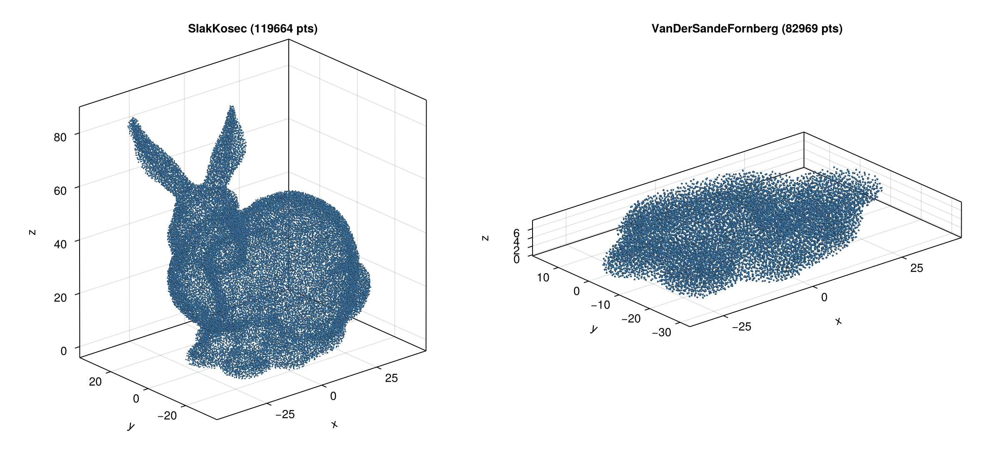

Discretization
Volume discretization generates interior points from a boundary surface. This is typically the second step in the workflow after importing a surface mesh — see the Guide for the full pipeline.
cloud = discretize(boundary, spacing; alg=algorithm, max_points=10_000_000)The max_points parameter is a safety limit that prevents runaway point generation. It defaults to 10 million. If your target spacing would produce more points than this limit, discretization stops early.
Algorithm Overview
| Algorithm | Dimensions | Spacing Required | Description |
|---|---|---|---|
SlakKosec | 3D | Yes | Sphere-based candidate generation |
VanDerSandeFornberg | 3D | Yes (ConstantSpacing only) | Grid projection with sphere packing |
FornbergFlyer | 2D | Yes (ConstantSpacing only) | 1D projection with height-field fill |
OctreeRandom | 3D | No | Octree-guided random point generation |

Choosing an Algorithm
- 2D problems: Use
FornbergFlyer— it is the only 2D algorithm and is selected by default for 2D boundaries. - 3D with variable spacing: Use
SlakKosec— it is the only 3D algorithm supportingLogLikespacing. - 3D with uniform spacing:
SlakKosec(default) orVanDerSandeFornbergboth work. SlakKosec is more general; VanDerSandeFornberg can be faster for simple geometries. - Large 3D meshes: Use
OctreeRandomor pass aTriangleOctreetoSlakKosecfor acceleratedisinsidequeries. See the Point-in-Volume & Octree page.
SlakKosec
Default algorithm for 3D discretization. Generates candidate points on spheres around existing points, accepting those that are inside the domain and sufficiently far from existing points.
# Basic usage
cloud = discretize(boundary, spacing; alg=SlakKosec())
# Custom number of candidates per sphere (default: 10)
cloud = discretize(boundary, spacing; alg=SlakKosec(20))
# With octree acceleration for faster isinside queries
octree = TriangleOctree("model.stl"; h_min=0.5)
cloud = discretize(boundary, spacing; alg=SlakKosec(octree))
cloud = discretize(boundary, spacing; alg=SlakKosec(20, octree))Supports both ConstantSpacing and variable spacings (LogLike).
VanDerSandeFornberg
3D algorithm that projects a 2D grid onto the shadow plane and fills the volume layer by layer using sphere packing heights.
cloud = discretize(boundary, ConstantSpacing(1mm); alg=VanDerSandeFornberg())Requires ConstantSpacing. Uses isinside (Green's function) for filtering generated points.
FornbergFlyer
2D-only algorithm. Uses a similar height-field approach as VanDerSandeFornberg, but projects onto the x-axis for 2D domains.
cloud = discretize(boundary, ConstantSpacing(0.1mm); alg=FornbergFlyer())This is the default (and only) algorithm for 2D boundaries.
OctreeRandom
Generates volume points directly from an octree decomposition of the domain. The octree classifies leaf nodes as interior, boundary, or exterior. Interior leaves are filled with random points directly (100% acceptance rate), while boundary leaves are oversampled and filtered with the octree-accelerated isinside test.
No spacing parameter is needed — point density is controlled by the octree resolution (h_min).
# From a mesh file (recommended — auto-computes h_min)
cloud = discretize(boundary, OctreeRandom("model.stl"))
# With explicit h_min
cloud = discretize(boundary, OctreeRandom("model.stl"; h_min=0.5))
# From a pre-built TriangleOctree
octree = TriangleOctree("model.stl"; h_min=0.5)
cloud = discretize(boundary, OctreeRandom(octree))
# With custom boundary oversampling (default: 2.0)
cloud = discretize(boundary, OctreeRandom(octree, 3.0))Parameters:
h_min— Minimum octree box size. Auto-computed from mesh diagonal and triangle count if omitted.max_triangles_per_box— Maximum triangles per leaf before subdivision (default: 50).boundary_oversampling— Oversampling factor for boundary leaves (default: 2.0). Higher values improve boundary coverage at the cost of more rejected candidates.verify_interior— Verify generated interior points withisinside(default:false). Usually unnecessary since leaf classification is reliable.verify_orientation— Check mesh normal consistency before building the octree (default:true).
Spacing Types
Spacing controls point density for algorithms that require it (all except OctreeRandom).
ConstantSpacing
Uniform spacing everywhere in the domain:
spacing = ConstantSpacing(1mm)Works with all algorithms.
LogLike
Variable spacing that is denser near the boundary and coarser in the interior. Uses a logarithmic-like growth function:
spacing = LogLike(cloud, base_size, growth_rate)cloud— An existingPointCloud. LogLike uses the cloud's boundary points to compute distances, so you must first create a cloud withConstantSpacing, then useLogLikefor a second-pass refinement.base_size— Spacing at the boundary surface.growth_rate— Rate at which spacing increases away from the boundary. Values > 1 create coarser interior points.
The spacing at a point is computed as base_size * x / (a + x) where x is the distance to the nearest boundary point.
Works with SlakKosec only.
Typical workflow:
# First pass with uniform spacing
cloud = discretize(boundary, ConstantSpacing(1mm); alg=SlakKosec())
# Second pass with variable spacing
spacing = LogLike(cloud, 0.5mm, 1.2)
cloud = discretize(boundary, spacing; alg=SlakKosec())References
- Slak, J. & Kosec, G. (2019). On generation of node distributions for meshless PDE discretizations. SIAM Journal on Scientific Computing, 41(5).
- Van der Sande, K. & Fornberg, B. (2021). Fast variable density 3-D node generation. SIAM Journal on Scientific Computing, 43(1).
- Fornberg, B. & Flyer, N. (2015). Fast generation of 2-D node distributions for mesh-free PDE discretizations. Computers & Mathematics with Applications, 69(7).